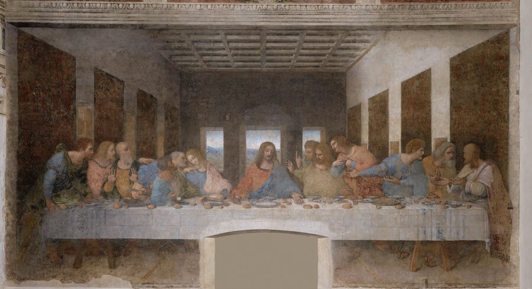
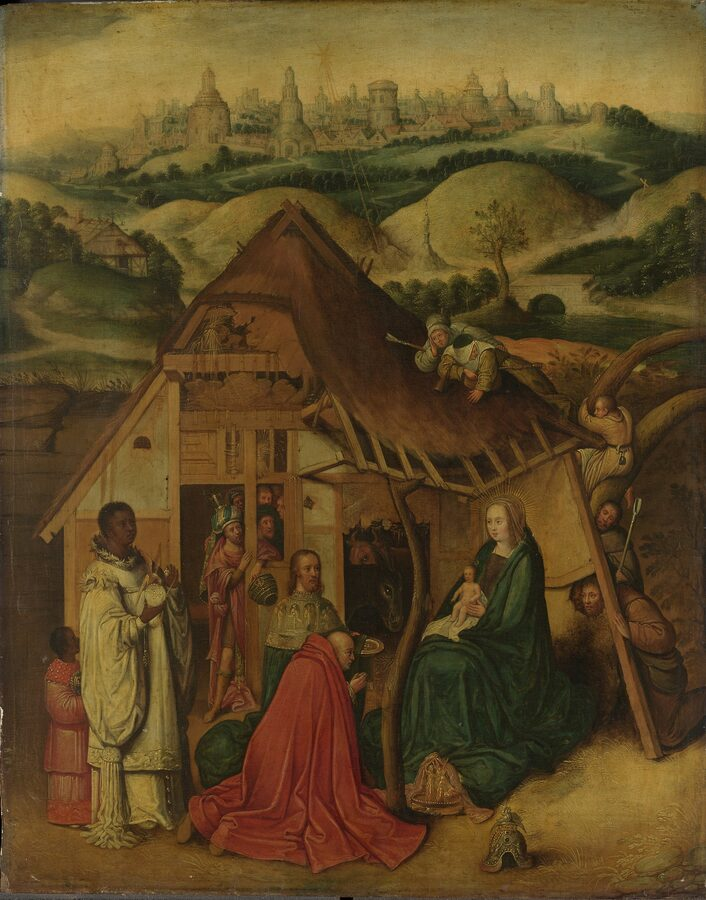
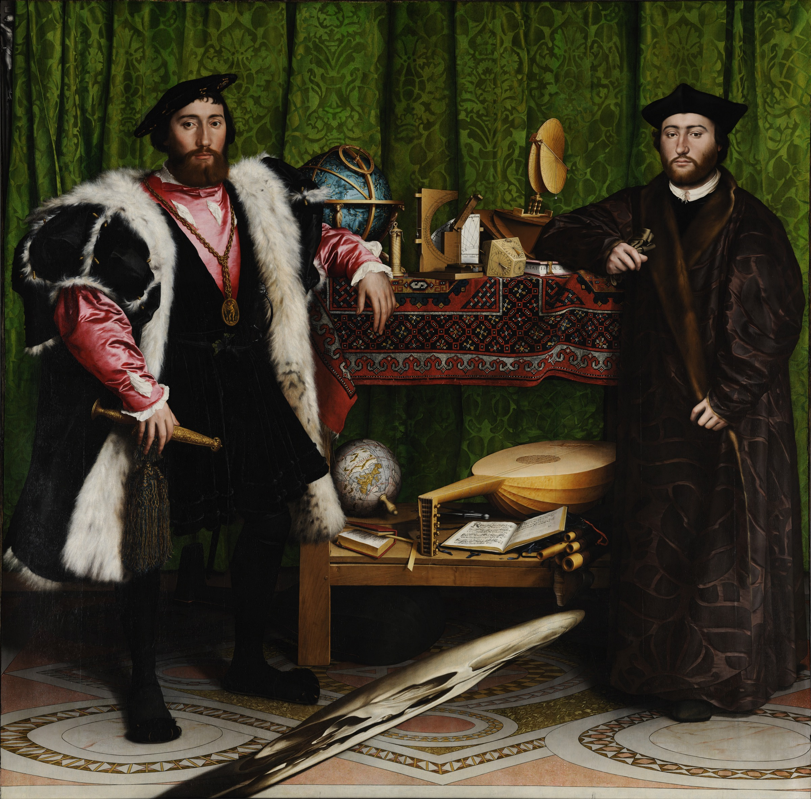
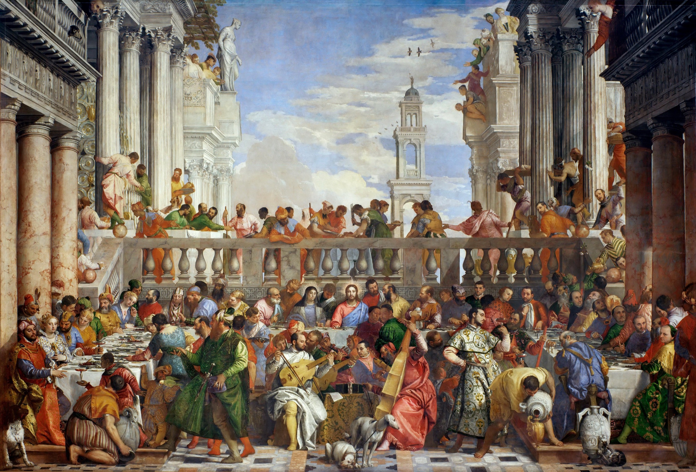

Complex Systems & Humanities · Iconography, Memory, Power
The School of Athens
Iconography, Memory & Historical Gatherings
Study how societies build shared meaning by staging groups of people and symbols inside one frame—from Renaissance frescoes and diplomatic oil puzzles to 20th-century summit photographs and pop-culture collage.
Systems & Society6 interactive visual exhibitsAnamorphic perspective labGrades 8–12
Big Idea
Iconography works like a cultural operating system: images do not merely record faces—they organize authority, status, memory, and debate about whose stories belong at the center.
Essential Question
How do staged gatherings teach a society what to value, question, fear, or remember?
Students Will
decode figures, gestures, and symbolic objects across eight gatherings
test how perspective and vantage point hide or reveal meaning
compare how photography inherited the cultural authority of mural painting
analyze why groups defend, contest, or censor public imagery
1. Raphael, The School of Athens (1509–1511)
Painted for Pope Julius II’s private library in the Vatican, Raphael’s fresco stages an impossible conversation across centuries: Greek geometers, a Persian cosmologist, an Andalusian Muslim philosopher, and Renaissance artists share one Roman vault. Click any pin, press Clean View for an unlabeled warm-up, or toggle the Composition Guide to trace how architecture organizes thought.
Explored 0 / 16
Raphael, The School of Athens, 1509–1511Click painting to open lightbox · arrow keys step through pins
Raphael, The School of Athens (1509–1511). Stanza della Segnatura, Apostolic Palace, Vatican. Plato gestures upward toward ideal Forms while Aristotle spreads his palm downward toward empirical nature—organizing the whole fresco around two complementary ways of knowing. Credit: Wikimedia Commons · Public domain.
Selected Figure
Plato
Impact on the world
What to notice in the fresco
Systems Lens:
School of Athens Roster (16 Figures)
Historical note: Because Raphael left no master key to the fresco, scholars agree on major figures (Plato, Aristotle, Pythagoras, Euclid, Raphael himself) while actively debating others such as Hypatia. Weighing visual evidence without forced certainty is central to historical thinking.
2. Five Centuries of Iconic Gatherings
Compare the exhibits in strict chronological order: sacred and diplomatic Renaissance murals evolve into documentary photographs of scientific and musical communities, then into late-modern media collage. Drag or zoom the track, or jump straight to any exhibit below.
The Last Supper (c. 1495–1498) — Leonardo da Vinci transforms a sacred meal inside a Milan refectory into a geometric and psychological drama of betrayal. Explore exhibit ↓
The School of Athens (1509–1511) — Raphael paints ancient and medieval thinkers conversing in one Roman temple, turning philosophy and mathematics into papal iconography. Explore exhibit ↓
Adoration of the Magi after Bosch (c. 1515) — Earthly rulers lay down crowns inside a crumbling rural shelter while curious shepherds and an enigmatic doorway figure watch. Explore exhibit ↓
The Ambassadors (1533) — Hans Holbein packs globes, dials, a broken lute, a hidden crucifix, and an anamorphic skull into a Tudor-era diplomatic portrait. Explore exhibit ↓
The Wedding Feast at Cana (1562–1563) — Veronese stages Christ’s first miracle inside a bustling 16th-century Venetian banquet of nobles, musicians, and servants. Explore exhibit ↓
Fifth Solvay Conference (1927) — Documentary photography takes over the cultural role of history painting, capturing 29 physicists debating quantum theory. Explore exhibit ↓
A Great Day in Harlem (1958) — Art Kane photographs 57 jazz musicians on a New York stoop, elevating Black American musical apprenticeship as an icon of living culture. Explore directory ↓
Sgt. Pepper’s Lonely Hearts Club Band (1967) — Peter Blake and Jann Haworth assemble 57 cardboard cut-outs across science, mystics, cinema, and literature into pop collage. Explore exhibit ↓
3. Leonardo da Vinci, The Last Supper (c. 1495–1498)
Before Raphael painted the Vatican, Leonardo transformed how artists organize a crowd. Rather than lining apostles evenly along a bench, he broke twelve men into four tight triads reacting dynamically to a single sentence—linking linear perspective to human psychology.
Explored 0 / 9

Leonardo da Vinci, The Last Supper, c. 1495–1498Notice Judas’s shadow and the 1652 doorway cut beneath Jesus
Leonardo da Vinci, The Last Supper (c. 1495–1498). Convent of Santa Maria delle Grazie, Milan. Tempera and oil on dry plaster. Receding coffers converge at Christ’s right temple while four dynamic triads ripple outward in shock and self-inquiry. Credit: Wikimedia Commons · Public domain.
Selected Figure
Jesus
Impact on the world
What to notice in the mural
Systems Lens:
Last Supper Roster (9 Figures & Triads)
4. Adoration of the Magi after Hieronymus Bosch (c. 1515)
In Northern European devotional art, a gathering does not showcase academic debate—it stages a clash between earthly splendor and fragile poverty. Three crowned rulers bring wealth into a collapsing thatched shed while peasants climb the roof and an unsettling stranger watches from the doorway.
Explored 0 / 9

Follower of Hieronymus Bosch, Adoration of the Magi, c. 1515Compare the kneeling Magi with the debated doorway onlooker
Follower of Hieronymus Bosch, Adoration of the Magi (16th century). Oil on oak panel, Rijksmuseum, Amsterdam. Royal gifts, an African king representing wider geography, rural shepherds perched on beams, and a mysterious doorway figure turn devotion into social contrast. Credit: Rijksmuseum / Wikimedia Commons · Public domain.
Selected Figure or Zone
Mary
Impact on the world
What to notice in the panel
Systems Lens:
Bosch Tradition Roster (9 Figures & Details)
5. Hans Holbein the Younger, The Ambassadors (1533)
Two young French diplomats flank a two-tiered cabinet packed with navigation globes, sundials, a merchant’s math book, a broken lute, and a Lutheran hymnal—while a stretched skull slices across the marble floor. Here objects carry as much political argument as people.
Explored 0 / 11

Hans Holbein the Younger, The Ambassadors, 1533Find the hidden crucifix at top-left, then test the skull viewer below
Hans Holbein the Younger, The Ambassadors (1533). National Gallery, London. Envoys Jean de Dinteville and Georges de Selve pose beside astronomical dials, a terrestrial globe, a broken lute, a Lutheran hymnal, a veiled crucifix, and an anamorphic skull. Credit: National Gallery, London / Wikimedia Commons · Public domain.
6. Paolo Veronese, The Wedding Feast at Cana (1562–1563)
Monumental in scale (over 32 feet wide), Veronese’s banquet turns Christ’s first miracle into a complete anatomy of Venetian society: dressed-up dignitaries, working kitchen hands pouring from stone jars, painter-musicians in front, and a startling foreshadowing carver directly above Jesus.
Explored 0 / 9

Paolo Veronese, The Wedding Feast at Cana, 1562–1563Toggle the guide to see the vertical axis linking carver, Jesus, and hourglass
Paolo Veronese, The Wedding Feast at Cana (1562–1563). Musée du Louvre, Paris. Oil on canvas. More than 130 Venetian nobles, musicians, and working servants fill Palladian colonnades around calm Jesus and Mary. Credit: Musée du Louvre / Wikimedia Commons · Public domain.
Selected Figure or Role
Jesus
Impact on the world
What to notice in the painting
Systems Lens:
Cana Roles Roster (9 Pins)
7. When Societies Reject Images: Iconoclasm & Censorship
Iconography commands high stakes precisely because images are never neutral. Throughout history, communities, churches, and states have debated whether powerful pictures inspire devotion and truth—or distort worship, threaten rulers, and spread falsehood.
Four Forces Behind Image Rejection
Theological boundaries: traditions worry figurative art can collapse into idolatry or violate reverence for the divine.
Political erasure: states alter photographs, topple statues, or scrub murals to rewrite who holds legitimacy.
Moral & social conflict: communities contest public monuments or artworks seen as demeaning, exclusionary, or offensive.
Platform & synthetic moderation: digital networks and governments remove or label imagery deemed propaganda, illicit, or synthetic misinformation.
Classroom Framing
Students do not need to agree on any single censorship decision. The analytical move is asking: what social power does this image carry that causes one group to enshrine it and another to alter, hide, or destroy it?
Case 1 · Byzantine Iconoclasm (726–843 CE)
Byzantine emperors twice banned religious icons across churches before defenders restored them in 843—arguing that honoring an image passes through to the prototype rather than worshiping wood and paint.
Case 2 · Reformation Image Cleansing (1520s–1560s)
During the exact decade Holbein painted The Ambassadors, Protestant iconoclasts removed stained glass, altarpieces, and statues across Northern Europe, shifting patronage toward portraits and secular still lifes.
Case 3 · 20th-Century Photo Alteration
Totalitarian ministries in the 1930s–40s famously airbrushed fallen officials out of official group photographs—showing that documentary photos inherit both the prestige and vulnerability of royal murals.
Case 4 · Digital Feeds & Synthetic Media
Modern social platforms moderate viral imagery by algorithm and policy, while AI-generated scenes reopen centuries-old questions about trust, proof, and who controls shared public vision.
8. The 1927 Solvay Conference: A Modern School of Athens
In October 1927, 29 physicists gathered in Brussels to argue over electrons, photons, and probability. Documentary photography takes over the role Raphael’s Vatican fresco once played—canonizing living scientists inside one frame. Filter by row or Nobel status, and inspect all 29 delegates.
Showing all 29 scientists
Explored 0 / 29
Benjamin Couprie, Fifth Solvay Conference, Brussels, 1927Notice Einstein dead center and Marie Curie as the lone woman
Fifth Solvay International Conference on Physics (October 1927). Institut International de Physique Solvay, Brussels. Twenty-nine physicists—seventeen of whom won Nobel Prizes—posed during the foundational Einstein–Bohr debates over quantum mechanics. Credit: Benjamin Couprie / Wikimedia Commons · Public domain.
Selected Scientist
Albert Einstein
Impact on the world
What to notice in the photo
Systems Lens:
Solvay Conference Roster (29 Delegates)
9. A Great Day in Harlem (1958): Living Cultural Lineage
On August 12, 1958, photographer Art Kane and Esquire art director Robert Benton gathered 57 jazz musicians on a Harlem brownstone stoop. Unlike an academic conference or Vatican library, this gathering made visible an oral, neighborhood-rooted system of mentorship stretching from early New Orleans and stride elders to bebop and cool-jazz innovators.
Rights-respecting directory: this original alphabetical explorer preserves the 57-musician roster documented by Harlem.org without reproducing the copyrighted photograph or its spatial layout. Use the official archive link above to view Art Kane’s photograph alongside these biographies.
Selected Musician
Count Basie
Impact on music & culture
What to listen for
10. Late-Modern Collage: Sgt. Pepper's Lonely Hearts Club Band (1967)
Four decades after Solvay, pop artists Peter Blake and Jann Haworth built a physical studio set crowded with 57 cardboard cut-outs around the Beatles. Here, commercial record sleeves absorb the iconography of Renaissance academies—mixing scientists, poets, mystics, comedians, and film stars into one mass-media family portrait.
The Beatles, Sgt. Pepper's Lonely Hearts Club Band (1967). Cover art by Peter Blake and Jann Haworth; photo by Michael Cooper. Credit: Apple Corps / EMI · Fair use educational discussion.
Literature & Imagination
Edgar Allan Poe
Shows that poets and Gothic storytellers become instant visual icons too—shaping cultural mood just as strongly as political leaders.
Wordplay & Logic
Oscar Wilde & Lewis Carroll
Victorian wit and mathematical nonsense literature mirror the Beatles’ surrealist lyrics, selecting literary ancestors across centuries.
Science Icon
Albert Einstein
Forty years after Solvay, Einstein’s portrait shifts from a working conference delegate into universal pop shorthand for curiosity and genius.
Depth Psychology
Sigmund Freud & Carl Jung
Highlight the 20th-century turn inward toward dreams, symbols, and archetypes—reminding viewers that culture runs on emotion as well as logic.
Global Wisdom
Sri Yukteswar & Lahiri Mahasaya
Kriya Yoga gurus broaden the collage beyond Western canons, echoing how Raphael placed Averroes and Zoroaster inside his Roman hall.
Mass-Media Icons
Bob Dylan, Stockhausen & Film Stars
Folk poetry, avant-garde tape composition, and Hollywood actors share one plane—flattening old boundaries between "high" and "popular" art.
11. Compare Two Gatherings: Iconography Systems Lab
Select any two works side by side—or launch a curated pairing—to see how medium, patronage, spatial center, and rules of inclusion change across 470 years.
System Dimension
The School of Athens (1509–1511)
Fifth Solvay Conference (1927)
Creator
Medium
Patron / Sponsor
Reality Mode
Visual Center
Who Is Included / Excluded
Cultural Work Done
Synthesis Question:
12. Lesson Flow, Check & Exit Ticket
Designed for a 45–60 minute studio humanities block or a multi-day visual-literacy mini-unit.
1. Warm-Up · 5 min
Toggle Clean View on The School of Athens or The Ambassadors before naming anything.
Ask: who occupies the brightest center, and what clues tell us how to read the scene?
2. Explore · 20 min
Inspect at least 10 figures across one Renaissance mural, one 20th-century photograph, and the Harlem directory.
Use the Detail Loupe and Holbein Angle Slider to gather visual evidence.
3. Synthesize · 15 min
Run a pair in the Compare Lab to trace how patronage and medium decide who gets remembered.
Complete the check below and write a two-part Exit Ticket.
Check Your Understanding
Teacher Notes & Sources
Where identifications remain scholarly consensus vs. open debate (as in Hypatia or Bosch’s doorway onlooker), treat uncertainty as evidence-based media literacy rather than trivia.
Classroom Adaptation Notes
Grades 6–8: Anchor on Clean View warm-ups ("Who has power in this picture and how can you tell?") and the Anamorphic Skull slider.
Grades 9–12: Run structured arguments in the Compare Lab linking patronage, Renaissance humanism, and modern media literacy.
Music & STEM crossover: Connect Pythagoras’s musical ratios and Holbein’s astronomical instruments to the Quadrivium and optics labs.